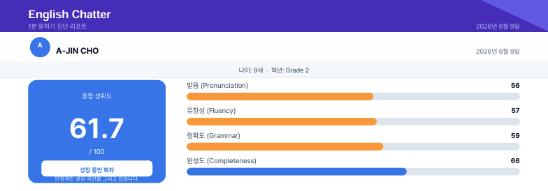

더 많이 공부하는 것보다, 아이가 직접 말해보고
표현해보는 경험이 먼저 필요합니다.
단어와 문장은 알고 있지만, 질문을 받으면 대답하기까지 오래 걸려요.
틀릴까 봐 짧게만 대답하거나, 부모님의 도움을 기다려요.
영어 공부는 하고 있지만, 실제로 말할 기회는 거의 없어요.
수업 전 간단한 진단으로 발음, 유창성, 문법, 표현력을 객관적으로 확인합니다.
진단 결과를 미리 확인한 튜터가 아이의 수준과 반응에 맞춰 맞춤형 대화를 진행합니다.
“잘했어요”로 끝나지 않고, 아이가 잘한 점과 앞으로 보완할 부분을 리포트로 남겨드립니다.
아이의 문장별 녹음부터 잘한 점과 보완할 점, 앞으로 어떻게 공부하면 좋을지까지 리포트로 확인할 수 있습니다.

"잉글리시채터가 마음에 들었던 이유 중 하나는 수업 전에 AI 1분 영어 말하기 진단을 진행한다는 점이었어요. 아이의 현재 영어 실력을 객관적으로 파악한 후 그 결과를 바탕으로 수업이 진행되기 때문에, 처음부터 아이 수준에 맞는 수업을 받을 수 있었답니다."
초등 1학년 학부모 · 베타 참여"무작정 문법을 지적하거나 기를 죽이지 않고, 아이가 생각한것을 표현할수 있도록 계속 따뜻하게 유도해 주셨어요.
초등 2학년 학부모 · 베타 참여"아이가 어떤 부분을 어려워하고 어떤 부분에 강점이 있는지 튜터가 사전에 미리 알고 수업에 들어오니, 수업의 질 자체가 다를 수밖에 없더라고요."
초등 3학년 학부모 · 베타 참여"무엇보다 우리 아이가 선생님을 너무너무 좋아했어요. 수업 시간만 되면 "오늘 선생님 만나는 날이지?" 하며 기다릴 정도였다니까요. 밝게 리액션해주시고 칭찬도 아낌없이 해주시니 아이가 마음을 활짝 열더라고요."
초등 1학년 학부모 · 베타 참여수업이 끝나자마자 "엄마, 생각보다 진짜 재밌는데? 나 오늘 말 잘한것 같아!" 하고 뿌듯해하는 모습에 저도 정말 만족스러웠습니다"
초등 1학년 학부모 · 베타 참여원하는 날짜와 시간을 선택하면 예약이 완료됩니다. AI 1분 말하기 진단과 1:1 라이브 수업을 2회 무료로 경험해보세요.
일정이 보이지 않으면 여기에서 예약해주세요.
네, 영어를 잘하지 못해도 괜찮습니다. 아이의 현재 수준에 맞춰 부담없이 말할 수 있도록 수업을 진행합니다.
온라인 1:1로 진행되며, 수업 전 AI 말하기 진단 → 원어민 튜터와 25분 라이브 수업 → 수업 후 리포트 피드백 순서로 진행됩니다.
아닙니다. 체험 후 아이와 잘 맞는 프로그램인지 충분히 확인한 뒤 결정하시면 됩니다.